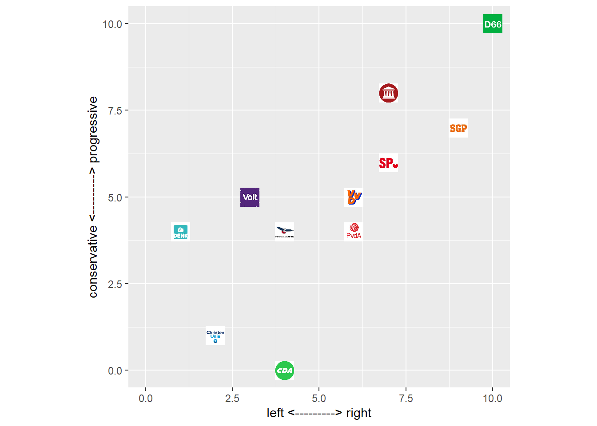

rm(list = ls())fsave <- function(x, file, location = "./data/processed/", ...) {
if (!dir.exists(location))
dir.create(location)
datename <- substr(gsub("[:-]", "", Sys.time()), 1, 8)
totalname <- paste(location, datename, file, sep = "")
print(paste("SAVED: ", totalname, sep = ""))
save(x, file = totalname)
}
fpackage.check <- function(packages) {
lapply(packages, FUN = function(x) {
if (!require(x, character.only = TRUE)) {
install.packages(x, dependencies = TRUE)
library(x, character.only = TRUE)
}
})
}
colorize <- function(x, color) {
sprintf("<span style='color: %s;'>%s</span>", color, x)
}packages = c("tidyverse", "sf", "ggplot2", "ggimage", "ggmap", "compiler", "Hmisc", "stats")
fpackage.check(packages)## Loading required package: Hmisc## Warning: package 'Hmisc' was built under R version 4.1.3## Loading required package: lattice## Loading required package: survival## Loading required package: Formula##
## Attaching package: 'Hmisc'## The following objects are masked from 'package:dplyr':
##
## src, summarize## The following objects are masked from 'package:base':
##
## format.pval, units## [[1]]
## NULL
##
## [[2]]
## NULL
##
## [[3]]
## NULL
##
## [[4]]
## NULL
##
## [[5]]
## NULL
##
## [[6]]
## NULL
##
## [[7]]
## NULL
##
## [[8]]
## NULLfPvar <- function(votes, positions, method = "euclidean") {
positions <- positions * 2 #this function wants a range of 2
distances <- as.matrix(dist(positions, method = method))
votes_mat <- votes %o% votes
diag(votes_mat)[diag(votes_mat) > 1] <- diag(votes_mat)[diag(votes_mat) > 1] - 1
Pvar <- Hmisc::wtd.var(as.numeric(distances), as.numeric(votes_mat))
return(Pvar)
}
fPvar <- cmpfun(fPvar)
fPV <- function(votes, positions, method = "euclidean") {
shares <- votes/sum(votes, na.rm = TRUE)
pbar <- rep(NA, NCOL(positions))
pbar <- as.numeric(t(shares) %*% positions) #center of mass / mean position
# distances to mean
if (method != "sq") {
if (NCOL(positions) == 1) {
distances <- as.matrix(stats::dist(c(pbar, positions), method = method))[, 1][-1]
} else {
distances <- as.matrix(stats::dist(rbind(pbar, positions), method = method))[, 1][-1]
}
}
# if (method=='sq') {distances <- ??}
# defining the constant
if (method == "euclidean") {
k <- 2/sqrt(NCOL(positions))
}
if (method == "manhattan") {
k <- 2/NCOL(positions)
}
if (method == "sq") {
k <- 1
}
PV <- k * sum(shares * distances)
return(PV)
}
fPV <- cmpfun(fPV)
fPER <- function(alpha = 1, votes, positions, method = "euclidean") {
positions <- positions
distances <- as.matrix(stats::dist(positions, method = method))
shares <- votes/sum(votes, na.rm = TRUE)
sharesi <- shares^(1 + alpha)
sharesj <- shares
ER <- as.numeric(sharesi %*% distances %*% sharesj)
return(ER)
}
fPER <- cmpfun(fPER)load("./data/processed/20220713positions_data2.RData")
positions_df<- x
positions_df<-positions_df %>%
filter(!is.na(kieskom_build1))positions_df$image <- c("./data/parties_png/BIJ1.jpg", "./data/parties_png/PvdD.jpg", "./data/parties_png/GL.jpg",
"./data/parties_png/SP.jpg", "./data/parties_png/PvdA.jpg", "./data/parties_png/DENK.jpg", "./data/parties_png/VOLT.jpg",
"./data/parties_png/D66.jpg", "./data/parties_png/CU.jpg", "./data/parties_png/50Plus.jpg", "./data/parties_png/PVV.jpg",
"./data/parties_png/CDA.jpg", "./data/parties_png/BBB.jpg", "./data/parties_png/SGP.jpg", "./data/parties_png/vvd.jpg",
"./data/parties_png/JA21.jpg", "./data/parties_png/FvD.jpg")p <- ggplot(positions_df, aes(x=nationalism_median, y=environment_median))+ geom_image(aes(image = image)) + xlim(0, 10) + ylim(0, 10) + xlab("left <---------> right") +
ylab("conservative <---------> progressive") + theme(aspect.ratio = 1)
p## Warning: Removed 4 rows containing missing values (geom_image).
load("./data/processed/20220708polling_df")
js_df <- x
rm(x)positions_df<-positions_df %>% drop_na(environment_median)
js_df <- ungroup(js_df)
js_df$Pvar <- rep(NA, nrow(js_df))
#js_df$PER <- rep(NA, nrow(js_df))
#js_df$PV <- rep(NA, nrow(js_df))
# I will use dimensions as above, but you will need to tweak of course.
#positions <- (cbind(positions_df$ethnic_minorities_median, #positions_df$nationalism_median)/10) #to range 0-1
order <- c(3,12,9,15,11,7,16,6,5,1,13,4,2,14,17,10,8 )
#order <- 17:1
positions <- positions_df[order, c("party", "ethnic_minorities_median", "nationalism_median") ]
#check
positions## party ethnic_minorities_median nationalism_median
## 3 bij1 NA NA
## 12 pvdd 4.0 4
## 9 gl 1.5 2
## 15 sp 5.0 6
## 11 pvda 4.0 4
## 7 denk 0.0 3
## 16 volt NA NA
## 6 d66 3.0 1
## 5 cu 4.5 6
## 1 50plus 5.0 6
## 13 pvv 10.0 10
## 4 cda 5.0 7
## 2 bbb NA NA
## 14 sgp 8.0 9
## 17 vvd 6.5 7
## 10 ja21 NA NA
## 8 fvd 10.0 10#if everything okay, drop the column with the party names
positions <- positions[, -1]
positions<-positions[1:2]/10
for (i in 1:nrow(js_df)) {
votes <- c(js_df$BIJ1[i], js_df$PvdD[i], js_df$GL[i], js_df$SP[i], js_df$PvdA[i], js_df$DENK[i],
js_df$Volt[i], js_df$D66[i], js_df$CU[i], js_df$PLUS50[i], js_df$PVV[i], js_df$CDA[i], js_df$BBB[i],
js_df$SGP[i], js_df$VVD[i], js_df$JA21[i], js_df$FvD[i])
js_df$Pvar[i] <- fPvar(votes = votes, positions = positions)
#js_df$PER[i] <- fPER(votes = votes, positions = positions)
#js_df$PV[i] <- fPV(votes = votes, positions = positions)
}## Warning in Hmisc::wtd.var(as.numeric(distances), as.numeric(votes_mat)): only
## one effective observation; variance estimate undefined# you may get a warning, this is because there is no variance at some polling stationsfsave(js_df, "positions")## [1] "SAVED: ./data/processed/20220714positions"